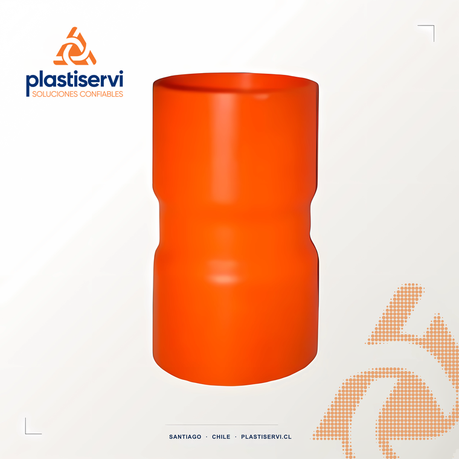
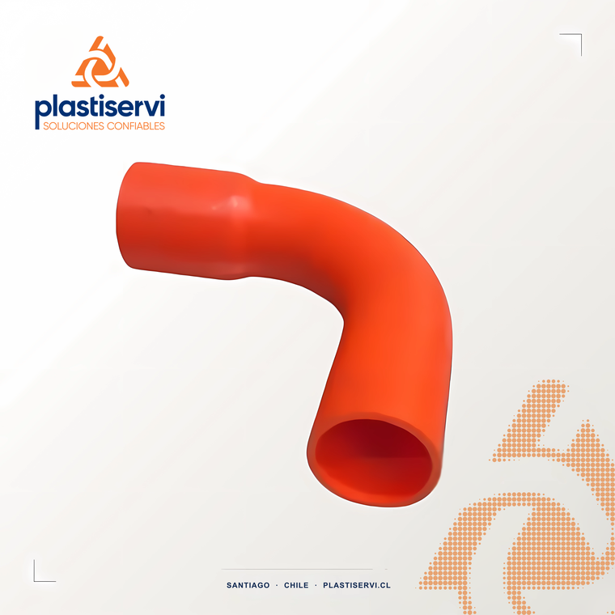
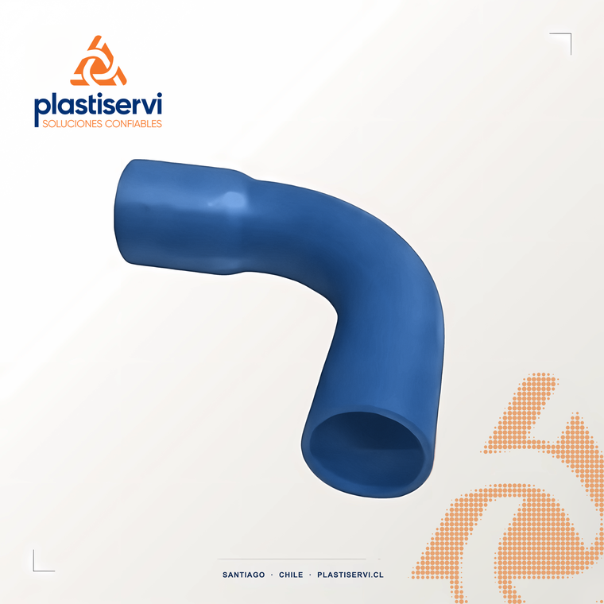

Tubos PVC y cañerías
Tubos de PVC y cañerías de alta calidad
Nuestra experiencia en el mercado nos permitió diversificar y desarrollar tubos de PVC y cañerías: nueve líneas para electricidad, telecomunicaciones, agua a presión, alcantarillado, industria y riego, con marca de conformidad CESMEC – Bureau Veritas en las líneas de PVC.

Tubería Subterránea 750 N
Tubería PVC conduit para instalaciones eléctricas y de telecomunicaciones subterráneas, con resistencia a la compresión de 750 N.
Descargar ficha técnica (PDF) ↓
Tubería Conduit
PVC naranja autoextinguible para protección de conductores eléctricos. Largos de 3 y 6 m, 16 a 160 mm, clases de resistencia a la compresión (750 y 1250 N). Norma IEC 61386-1.
Descargar ficha técnica (PDF) ↓
Tubería Hidráulica
PVC-U celeste, 6 m, para agua potable, pozos profundos y riego tecnificado. Presiones PN 6, 8, 10, 12,5 y 16 según NCh 399. Certificada CESMEC.
Descargar ficha técnica (PDF) ↓
Tubería Schedule 40/80
PVC industrial naranja o gris (con protección UV) de ½" a 6". Conducciones eléctricas industriales, minería y fluidos corrosivos. Autoextinguible.
Descargar ficha técnica (PDF) ↓
Tubería Sanitaria
PVC gris de 40 a 110 mm en 6 m, para evacuación de aguas servidas y alcantarillado domiciliario. Norma NCh 1635.
Descargar ficha técnica (PDF) ↓Tubería Colector
PVC negro para conducción gravitacional de residuos industriales líquidos, aguas lluvias y alcantarillado público enterrado. Unión Anger con goma.
Descargar ficha técnica (PDF) ↓Cañería PE recuperado
Polietileno de baja densidad reciclado, negro, en rollos de 50 y 100 m, de ½" a 4". Hasta 5 bar, pensada para riego y agricultura.
Descargar ficha técnica (PDF) ↓Cañerías PEAD
Cañerías de polietileno de alta densidad para conducción de agua.
Tubos telefónicos
Tubos de PVC para canalización de redes telefónicas y de telecomunicaciones.
Contacto
¿Tienes un proyecto?
Cuéntanos qué necesitas y te respondemos a la brevedad. Sin compromiso.
Solicitar cotización →